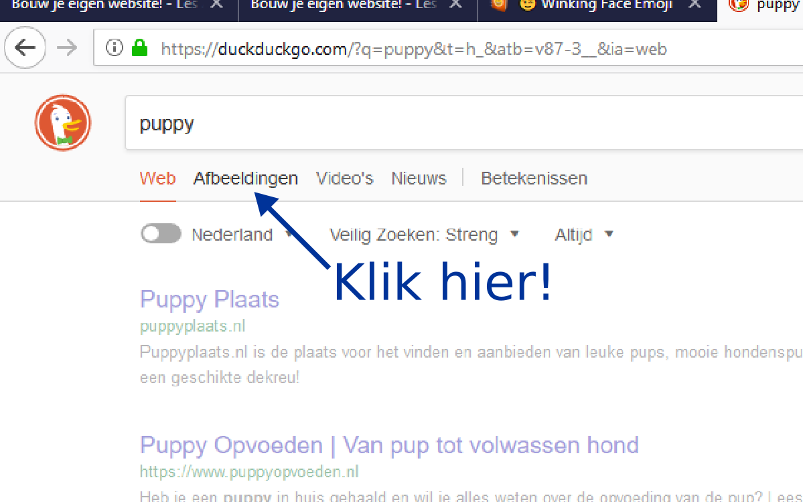
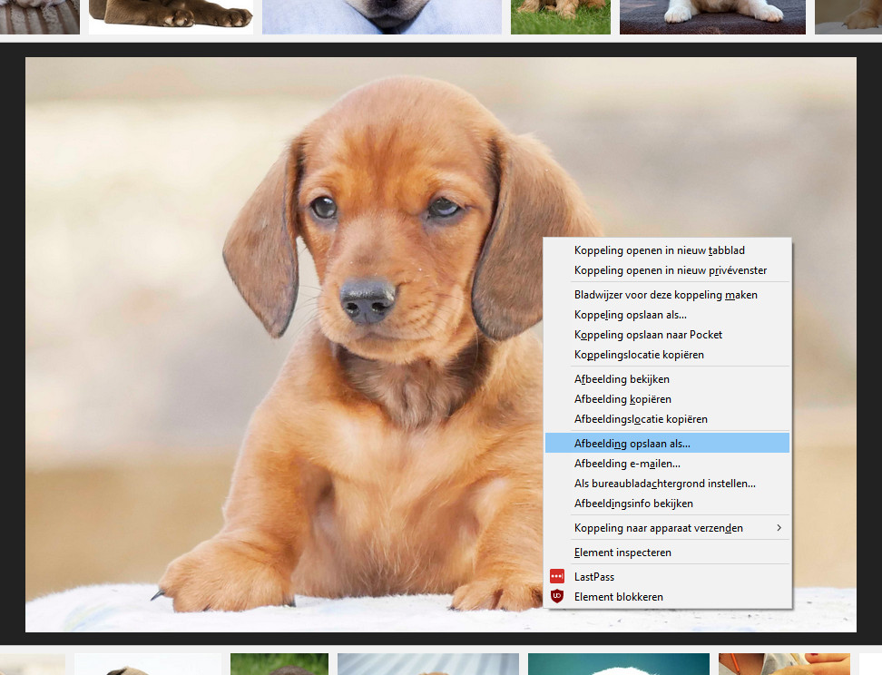

Alleen tekst op je website is saai 😒.
Laten wij een plaatje toevoegen! 😃
Wat je nodig hebt.
Je website nadat je les 1 hebt gedaan.
Als je nog niet zover bent is dat niet erg:
dan kan je verder gaan met de bestanden in "resultaat na les 1"!
Een laptop
Een tekstverwerker waarin je de code kan schrijven.
Wij raden Notepad++ aan.
Een internetbrowser waarin je je website kan bekijken.
De voorbereiding.
Open je website in je internetbrowser en in Notepad++.
Als je niet meer weet hoe dit gaat, lees dan de voorbereiding van les 1 nog een keer 😉.
Let op: je website ziet er nu anders uit!
Een plaatje vinden.
Je hebt natuurlijk eerst een plaatje nodig.
Misschien heb je al een plaatje op jouw laptop staan.
Je kan er ook een vinden via een zoek-machine zoals Duck Duck Go, of Google.
Als je al weet hoe je een plaatje kan vinden, of al een plaatje hebt, mag je deze stap overslaan.
Laten we een plaatje van een puppy zoeken via Duck Duck Go!
Volg deze stappen:
Typ in wat voor plaatje je wil vinden. Druk dan op de Enter toets.
Ik kies nu voor "puppy", maar jij mag natuurlijk iets anders kiezen!
Nu zie je een lijst met websites, maar wij willen een lijst met plaatjes!
Let op! Kijk eerst even of er bij "Veilig Zoeken" "Streng" staat. Als dit niet zo is, klik dan op "Veilig zoeken" en klik daarna op "Streng".
Klik op "Afbeeldingen" om de gevonden plaatjes te zien.

Klik nu op een plaatje die je leuk lijkt.
Het plaatje wordt nu groot getoond.
Klik nu met je rechter-muisknop op het plaatje.
Er verschijnt een menu.
Klik op "Afbeelding opslaan als..."

Sla het plaatje op in de map "plaatjes".
Deze kan je vinden in dezelfde map waarin je website (mijn-website.html) staat!
Tip: kies een makkelijke naam bij het opslaan, zoals "puppy".
2. Je plaatje op je website plaatsen.
Nu hoef je alleen nog het plaatje op jouw website te plaatsen.
Voeg daarvoor deze code toe aan mijn-website.html.
Doe dit na het <p>...</p> element.
"jouw-plaatje.png" moet je vervangen door de naam van het plaatje dat je hebt opgeslagen. Bijvoorbeeld "puppy.png".
Let er op dat je de punt aan het einde en wat er achter staat (meestal ".png", ".jpg" of ".jpeg") ook meeneemt!
Als je nu je website refreshed in je internetbrowser zie je je plaatje op je website!
1.3. Wat is er gebeurd?
Je hebt een nieuw element toegevoegd!
Een "image" element. Dit type element heeft als opening tag <img>.
Maar het element heeft iets extra: attributen!
Wat zijn attributen?
Attributen geven extra informatie aan een element.
Ons plaatje heeft twee attributen:
src: dit laat de internetbrowser weten waar hij het plaatje vandaan moet halen.
width: dit laat de browser weten hoe breed het plaatje op de website moet zijn.
De attributen zijn hier ingekleurd, in geel en blauw: